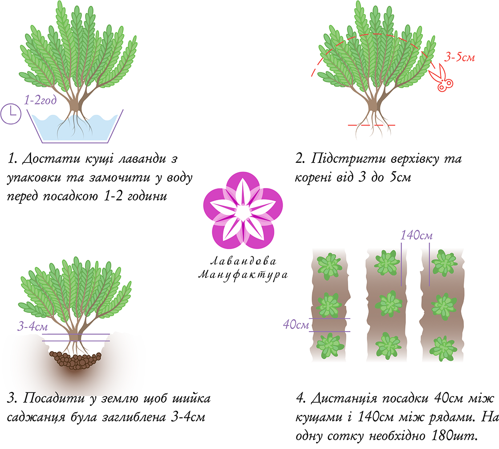
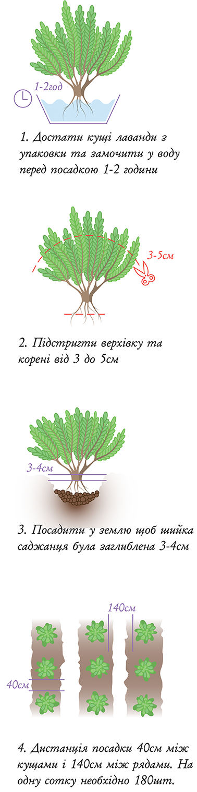

Посадка лаванда у відкритий грунт
Запорука успішного вирощування лаванди - правильний вибір місця для посадки. Найбільше рослині сподобаються відкритіділянки, добре освітлені сонячними променями (6 годин мінімум в літній час). Кущики приживуться і в тіні, ось тільки рясного і тривалого цвітіння не буде.
Коріння рослини чуйно реагують на високий рівень вологи ґрунту. Тому варто утриматися від висаджування лаванди назаболочених ділянках та територіях, де занадто високо лежать ґрунтові води. Ґрунт повинен бути легким, добре дренованим, щоб не було застою води, якщо важкий - додаємо піску, якщо ж навпаки один пісок, то частіше потрібно поливати. Також не рекомендовано саджати в глиняний ґрунт.
Посадка лаванди в Україні здійснюється у два сезони. Перший сезон - весняний, період кінець березня до кінця квітня.Другий сезон посадки - осінній кінець вересня до середини листопада. Необхідно звертати увагу на погодні умови регіону, адже в Одесі в кінці березня може бути вже досить тепло, а ось в Києві або Чернівцях в цей же місяці досить таки прохолодно.
Перед посадкою землю перекопують і прибирають коріння рослин. Саджанець поміщають в підготовлену ямку, розправляють корінняі присипають землею так, щоб коренева шийка була заглиблена на 4-6 см. Рослину після посадки рясно поливають. Лавандова Мануфактура займається професійно вирощуванням саджанців вузьколистої лаванди, купити корчі лаванди у нашому інтернет магазині.
Щоб кущики виросли пишними, їх потрібно садити рідко. Між саджанцями залишають 40 см, дистанція між рядками 1.40 см. Лаванда не любить кислі ґрунти.
